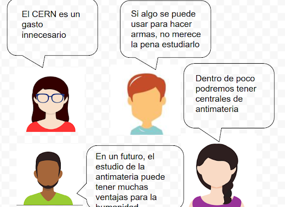
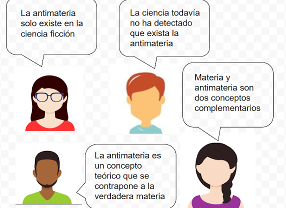

Investigando las propiedades de la materia | Serie Investigando
Antimateria para "dummies"
Antimateria para "Dummies": una lectura científica
Seguro que nos suena la palabra “antimateria” porque en muchos libros, cómics y películas de ciencia ficción se habla de ella para intentar explicar secretos del Universo o de algún arma peligrosa.
Wikipedia. Particulas y antiparticulas(Dominio público)
¿Y la Ciencia?, ¿qué nos dice sobre ésto?, ¿existe la “antimateria”?
¿A que hemos oído hablar sobre el Acelerador de partículas del CERN? Pues tiene que ver con ello. Vamos a descubrirlo.
Antimateria para "Dummies": una lectura científica
Duración:
1 sesión
Agrupamiento:
Individual
Hemos estudiado e investigado sobre las propiedades de la materia y, de repente, nos encontramos que existe ¡la antimateria!
¿En qué consiste?, ¿es lo contrario a la materia?, ¿tiene las mismas propiedades o son distintas? A través de varias actividades nos vamos a sumergir en este concepto para entenderlo. Primero veremos un vídeo explicativo, después haremos una lectura científica y resolveremos dilemas, para acabar comprobando nuestros conocimientos haciendo nuestros propios dilemas.
1. Vídeo
Intentar explicar lo que es la antimateria no es nada fácil. Sin embargo el YouTuber científico Javier Santaolalla, en su canal “Date un voltio”, nos ofrece una explicación para “dummies”. Lo vemos en clase y, después, por grupos, intentamos hacer una definición sencilla. Lo ponemos en común.
Hecha esta primera aproximación, vamos a profundizar mediante esta lectura. La hacemos en grupo, de forma cooperativa.
LECTURA
En la ciencia ficción, la antimateria se menciona generalmente en relación con dos temas: la energía o los universos alternativos. Cuando la antimateria se presenta como una fuente de energía, comúnmente es un combustible o un arma. Por ejemplo, los motores de la nave estelar “USS Enterprise” de la saga “Star Trek”, son propulsados por antimateria y es la principal energía de los “Transformers”. En la novela “Ángeles y demonios” de Dan Brown se utiliza para crear una bomba de gran poder de destrucción.
En física y química, la antimateria es lo contrario de la materia. La antimateria está compuesta de antipartículas opuestas de las que constituyen la materia normal: antiprotones, antineutrones etc., y tiene también propiedades. El concepto de antimateria lo desarrolló Paul Dirac en 1929, siendo una revolución en el mundo de la física y consiguiendo por ello el Nobel en 1933. A partir de allí muchos científicos han dado pasos adelante de la teoría inicial y, actualmente, es un campo de estudio de La teoría especial de la relatividad y la mecánica cuántica
La antimateria se crea en el universo a partir de colisiones entre partículas de alta energía, como en el centro de una galaxia, por ejemplo, pero aún no se ha detectado ningún tipo de antimateria como residuo del Big Bang, cosa que sí se ha logrado con la materia. ¿Dónde quedó la antimateria que debió haberse formado con el nacimiento del universo? Con este fin, la NASA tiene instalado un detector de antipartículas en la estación espacial internacional desde el 2002, "Espectrómetro Alfa Magnético" (AMS).
La antimateria también se produce en los laboratorios por medio de colisiones, empleando para ello los aceleradores de partículas. Se ha producido en cantidades muy pequeñas desde 1955. Sin embargo, generar un solo antiprotón es inmensamente difícil, requiere muchísima energía y su almacenamiento es muy complicado. Por lo tanto su producción en la actualidad es muy limitada (entre 1 y 10 nanogramos por año) y se realiza en instalaciones como en CERN o el Fermilab. Es la sustancia más cara en la Tierra, 62.5 billones de dólares por gramo. En 1995 se consiguió producir átomos de antihidrógeno, pero no se ha logrado crear antimateria de mayor complejidad.
La antimateria es la fuente de energía más eficiente en la Tierra. Si se combinara un kilogramo de antimateria con un kilogramo de materia, la liberación de energía resultante sería aproximadamente equivalente a 43 megatones de TNT. Hasta el momento, solamente se han desarrollado en laboratorio diecinueve antiátomos de hidrógeno.
La antimateria ha encontrado sus aplicaciones en diferentes áreas. Para la física es una herramienta para estudiar las leyes y simetrías físicas que gobiernan el comportamiento de la naturaleza. En medicina se están empleando haces de antiprotones para atacar tumores y tejido canceroso dentro del cuerpo humano. También se está usando en ingeniería, para determinar calidad e imperfecciones en materiales.
Si la antimateria pudiera producirse de manera más rápida y económica, se podría disponer de reactores materia-antimateria para producir energía, unir antiátomos para crear antimoléculas, revolucionar los viajes espaciales permitiendo los viajes interplanetarios o posiblemente los viajes interestelares. Pero de nuevo entramos en un terreno especulativo, que es, precisamente en el que se mueve la ciencia ficción. Hemos vuelto al principio de esta lectura.
3. Dilemas
Observamos las siguientes imágenes. En ellas se plantean dos dilemas sobre el texto que acabamos de leer y sólo una de las afirmaciones es correcta. En el grupo, pensamos y debatimos cuáles pueden ser y por qué.


Imágenes propias
4. Nuestros dilemas
Ahora es nuestro turno. Elegiremos un aspecto de la lectura, el que consideremos más interesante, y plantearemos, siguiendo el modelo, un par de dilemas. Luego los intercambiaremos con los de los otros grupos y trataremos de responderlos. Al final, haremos una puesta en común en clase.
 Wikipedia. Particulas y antiparticulas (Dominio público)
Wikipedia. Particulas y antiparticulas (Dominio público)